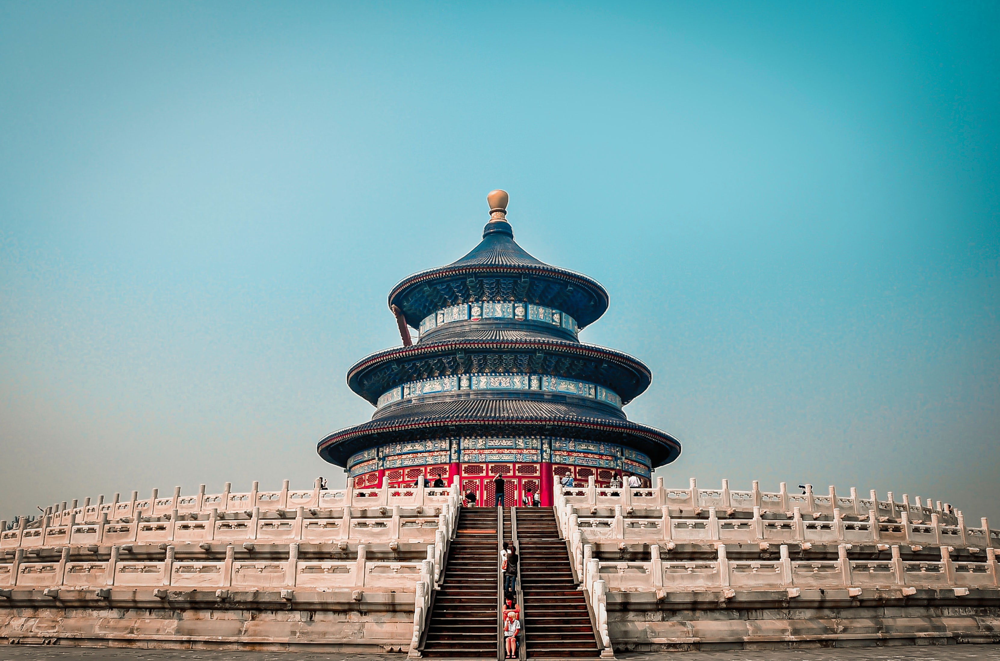

Beijing, Jing for short, is the nation's political, economic, cultural and educational center as well as China's most important center for international trade and communications. Together with Xian, Luoyang, Kaifeng, Nanjing and Hangzhou, Beijing is one of the six ancient cities in China. It has been the heart and soul of politics and society throughout its long history and consequently there is an unparalleled wealth of discovery to delight and intrigue travelers as they explore Beijing's ancient past and enjoy its exciting modern development.
